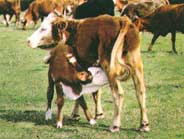

Issue # 188-November 2001
Separating Fact from Fiction
There have been no cases of BSE diagnosed in the United States. Cattle in England were originally infected after eating underprocessed feed contaminated with sheep byproducts from sheep infected with scrapie, a similar "brain-eroding" disorder.
Effected cows will act demented, often aggressive, though sometimes very subdued. Diagnosis can be made only by slaughtering the BSE suspect and inspecting tissue samples of the brain under a microscope, looking for the telltale vacuoles.
Because prions replicate so slowly, the disease is not found in cattle less than 30 months old. Since most cattle are slaughtered before the age of 30 months, the risk of humans eating infected meat is small. In addition, the disease-causing agent is primarily found only in the brain, spinal cord and retina.<
Despite this, the death of 87 people since 1996 has been linked to the consumption of BSE-tainted beef. In humans the disease is known as Creutzfeldt-Jacob Disease (variant), or CJD(v), a previously rare neurological disease that is caused by similar, spongelike transformation of brain tissue.
Even more disturbing, another form of prion disease, known as chronic wasting disease of deer and elk, has appeared in the western portion of the United States, centered in the Colorado-Wyoming area. Hunters who eat meat from infected animals could develop CJD(v) disease. The disease has also infected elk ranches in the United States and Canada. Effected animals will often appear weak; sometimes their heads will tremor or bob. This disease may have been introduced in the 1980s through Colorado Division of Wildlife feeding stations that offered feed contaminated with scrapie-infected sheep byproducts.
|
 |
|
|